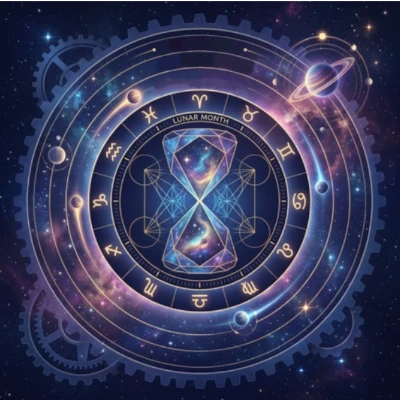

Le stress n'est pas toujours lié à vos circonstances actuelles, ni à un problème d'image de soi.
Parfois, il puise ses racines dans des couches bien plus profondes — des empreintes symboliques et intérieures qui influencent votre parcours de façon tangible. Comprendre comment elles se manifestent dans votre quotidien, c'est vous donner accès à une carte précieuse pour traverser vos défis avec plus de clarté et de sérénité.
L'astrologie est avant tout un langage symbolique — une grille de lecture du vivant utilisée depuis des siècles dans de nombreuses traditions humaines.
Elle ne prétend pas expliquer le monde à la façon des sciences exactes. Elle propose autre chose : une carte intérieure, un miroir pour mieux se comprendre. Et c'est précisément dans cet espace de réflexion sur soi qu'elle peut devenir un outil puissant de développement personnel.
Votre thème natal reflète la configuration céleste au moment exact de votre naissance. Certaines configurations créent des zones de tension naturelles — des endroits où l'énergie circule avec plus de friction, et où les défis ont tendance à se concentrer.
Un carré se forme lorsque deux planètes sont séparées par un angle de 90 degrés.
Leurs énergies entrent en confrontation directe — non pour se neutraliser, mais pour créer un mouvement. Une pression intérieure qui pousse à agir, à chercher, à dépasser.
Dans le quotidien, cela peut se manifester comme :
Ce n'est pas un dysfonctionnement — c'est une dynamique vivante, exigeante, et profondément formatrice.
Les maisons astrologiques représentent les différentes sphères de votre vie : identité, ressources, relations, carrière, spiritualité…
Lorsqu'une planète difficile occupe une maison spécifique, elle y concentre son énergie de façon durable :
| Maison | Zone de friction potentielle |
|---|---|
| Maison 2 | Valeur personnelle, sécurité matérielle |
| Maison 7 | Relations, engagements |
| Maison 12 | Inconscient, isolement, spiritualité |
Ces configurations indiquent les domaines où votre énergie est la plus sollicitée — et où un travail sur vous-même peut produire les effets les plus profonds.
Le ciel ne s'arrête pas au moment de votre naissance. Les planètes continuent leur course et viennent régulièrement activer des points sensibles de votre thème natal.
Ces périodes sont intenses — et ce sont précisément elles qui portent les germes des transformations les plus durables.
Au-delà des configurations natales, certains stress semblent résister à toute explication rationnelle. Ils se répètent, s'intensifient, reviennent sous des formes différentes.
De nombreuses traditions spirituelles utilisent le mot "karma" pour désigner ces schémas profondément ancrés — non pas comme une fatalité ou un poids imposé de l'extérieur, mais comme une métaphore utile pour nommer ce qui, en nous, n'a pas encore été pleinement vu, compris ou intégré. C'est dans ce sens symbolique et exploratoire que nous l'utilisons ici.
Vous vous retrouvez constamment dans les mêmes situations — avec des personnes différentes, dans des contextes différents — mais avec cette sensation troublante de déjà-vu ?
C'est souvent le signe qu'un schéma émotionnel profond n'a pas encore été intégré. La répétition n'est pas là pour vous faire souffrir. Elle est là pour attirer votre attention sur ce qui demande à évoluer en vous.
Ces zones de résistance — autour de l'abandon, du rejet, du manque, de la confiance — méritent d'être explorées avec curiosité plutôt que combat.
Qu'elles trouvent leur source dans votre histoire personnelle, dans des dynamiques familiales héritées ou dans des habitudes émotionnelles ancrées, ce qui compte c'est de les reconnaître pour ce qu'elles sont : non pas des vérités définitives sur qui vous êtes, mais des signaux qui indiquent où un travail sur soi peut produire les effets les plus durables.
Des résistances qui se présentent systématiquement dans certains domaines — l'argent, l'amour, la créativité, la santé — peuvent signaler un nœud émotionnel profond qui mérite d'être exploré.
Pas comme une malédiction. Comme une invitation à regarder en face ce qui n'a pas encore été vu.
Identifier ces schémas est déjà une première libération. La transformation s'opère dans la durée — non dans l'urgence ou la force, mais dans une présence de plus en plus consciente à ce qui se passe en vous.
4 clés pour commencer dès aujourd'hui :
Vos défis astrologiques et karmiques ne sont pas des obstacles à votre épanouissement. Ils en sont souvent les conditions.
Ce sont eux qui forgent la profondeur, la résilience, la capacité à comprendre les autres — parce que vous avez d'abord appris à vous comprendre vous-même.
Là où ça résiste, quelque chose cherche à naître.
Là où c'est inconfortable, une partie de vous attend d'être enfin entendue.
Vous avez en vous les ressources pour traverser ces schémas — et les transformer à votre rythme.
Qu'est-ce que l'astrologie karmique ?
L'astrologie karmique est une approche symbolique qui utilise le thème natal pour identifier des schémas émotionnels récurrents. Elle est utilisée ici comme outil de développement personnel et de connaissance de soi, non comme système de prédiction.
Pourquoi le même stress revient-il toujours ?
Un stress récurrent est souvent le signe d'un schéma émotionnel profond non intégré. Il peut trouver son origine dans l'histoire personnelle, des dynamiques familiales héritées ou des habitudes émotionnelles ancrées. L'explorer avec curiosité est souvent plus efficace que de chercher à le supprimer.
Comment commencer à transformer ses schémas de stress ?
La première étape est l'observation sans jugement : identifier les situations qui se répètent, les émotions récurrentes, les domaines de friction. Un accompagnement personnalisé peut ensuite accélérer ce processus de façon significative.
L'astrologie peut-elle vraiment aider à gérer le stress ?
Utilisée comme outil de réflexion symbolique, l'astrologie peut offrir une grille de lecture utile pour mieux se comprendre. Elle ne remplace pas un suivi médical ou psychologique, mais peut compléter une démarche de développement personnel.